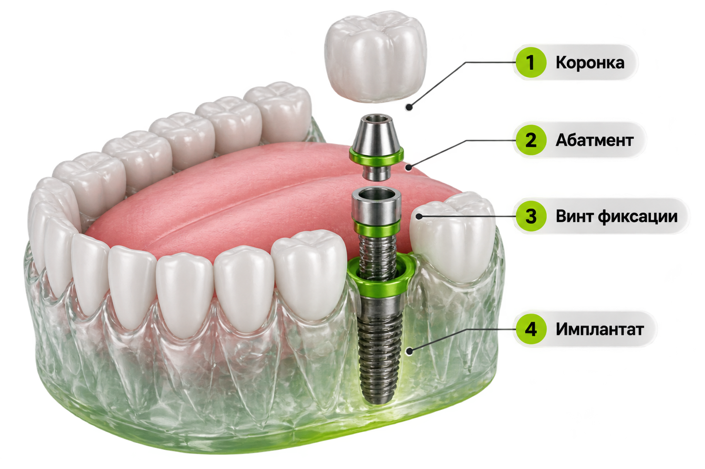

ОСНОВА КОНСТРУКЦИИ
Имплантат
Титановая опора, которую устанавливают в костную ткань для последующего восстановления зуба.
Уточнить в клиникеСТОМАТОЛОГИЯ В ЭНГЕЛЬСЕ
Забота о здоровье зубов — от лечения и профилактики до восстановления улыбки.
НАПРАВЛЕНИЯ РАБОТЫ
Основные направления стоматологической помощи. Подходящий вариант лечения определяется после осмотра.
 ТЕРАПИЯ И ЭСТЕТИКАЛечение и восстановление зубов
ТЕРАПИЯ И ЭСТЕТИКАЛечение и восстановление зубов
 СТОМАТОЛОГИЧЕСКИЙ ПРИЁМДиагностика и лечение
СТОМАТОЛОГИЧЕСКИЙ ПРИЁМДиагностика и лечение
 ВОССТАНОВЛЕНИЕИмплантация и протезирование
ВОССТАНОВЛЕНИЕИмплантация и протезирование
Основные направления
Перечень собран по открытым справочникам. Актуальность отдельных процедур, стоимость и возможность приёма уточняйте непосредственно в клинике.
ВОССТАНОВЛЕНИЕ ЗУБОВ
Способ восстановления подбирается индивидуально — после осмотра и диагностики.
Титановая опора, которую устанавливают в костную ткань для последующего восстановления зуба.
Уточнить в клиникеВрач оценивает состояние зубов и тканей, изучает диагностику и определяет возможный план.
Уточнить в клинике
Коронка формирует видимую часть зуба, а абатмент соединяет её с имплантатом.
Уточнить в клиникеВариант конструкции и последовательность этапов зависят от клинической ситуации.
Уточнить в клиникеИЗ ЧЕГО СОСТОИТ КОНСТРУКЦИЯ
Искусственная видимая часть зуба.
Соединительный элемент между имплантатом и коронкой.
Крепёжный элемент выбранной системы.
Опорная часть конструкции, устанавливаемая в кость.
ОТ ДИАГНОСТИКИ ДО КОРОНКИ
Оценка состояния полости рта и планирование.
Хирургический этап по индивидуальному плану.
Подбор компонентов, совместимых с системой.
Завершение ортопедического этапа по показаниям.
ТЕХНИЧЕСКИЕ ДЕТАЛИ
Диаметр и длина имплантата, материал компонентов и тип соединения нельзя достоверно указать без названия производителя и модели. Эти данные уточняются по документации изделия и плану лечения.
Иллюстрация и описание носят ознакомительный характер. Реальная конструкция, совместимость компонентов и этапы лечения могут отличаться в зависимости от выбранной системы и клинической ситуации.
ВОССТАНОВЛЕНИЕ УЛЫБКИ
На консультации можно обсудить состояние зубов, возможные варианты лечения и последовательность процедур.
Можно обсудить варианты замещения отсутствующих зубов.
Врач оценит, какие зубы можно сохранить и восстановить.
План лечения зависит от состояния костной ткани и оставшихся зубов.
На приёме можно сравнить возможные варианты конструкций.
О КЛИНИКЕ
Стоматология находится на улице Маяковского. Если вы не уверены, к какому направлению относится ваша ситуация, позвоните в клинику и уточните, с чего начать.
КОНТАКТЫ И ЗАПИСЬ
Позвоните, чтобы уточнить стоимость нужной процедуры, расписание и возможность приёма.
+7 (937) 020-20-93 +7 (8453) 75-72-27